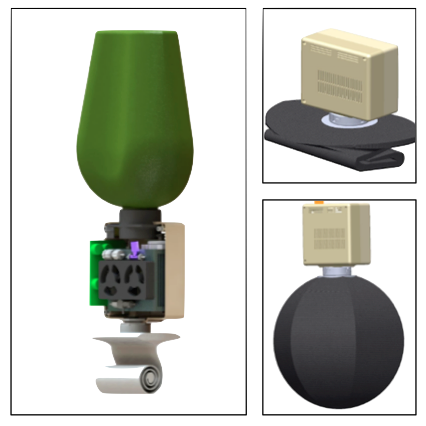

Emergency Power Pack
My team iterated on a design for an emergency power pack (EPP). This was for the Engineering Systems Design class, co-instructed by from MIT Lincoln Laboratory. We improved upon previous work, solving several issues incluing over-pressurization. I was part of a two person subteam that designed and tested a new approach for regularizing the rate of reaction. Our new designed allowed us to make several more sweeping design decision, that changed the system design, allowing us to target a non-military customer base as well.
